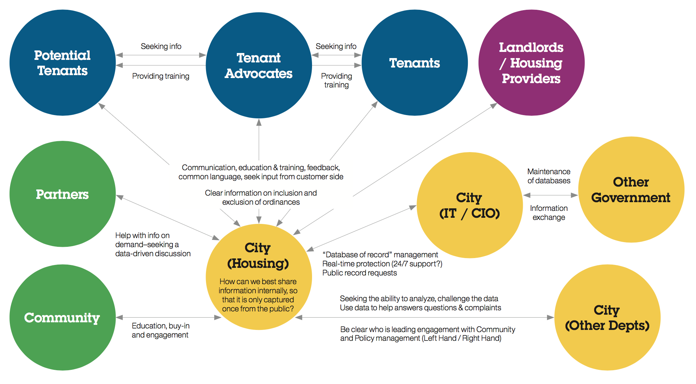
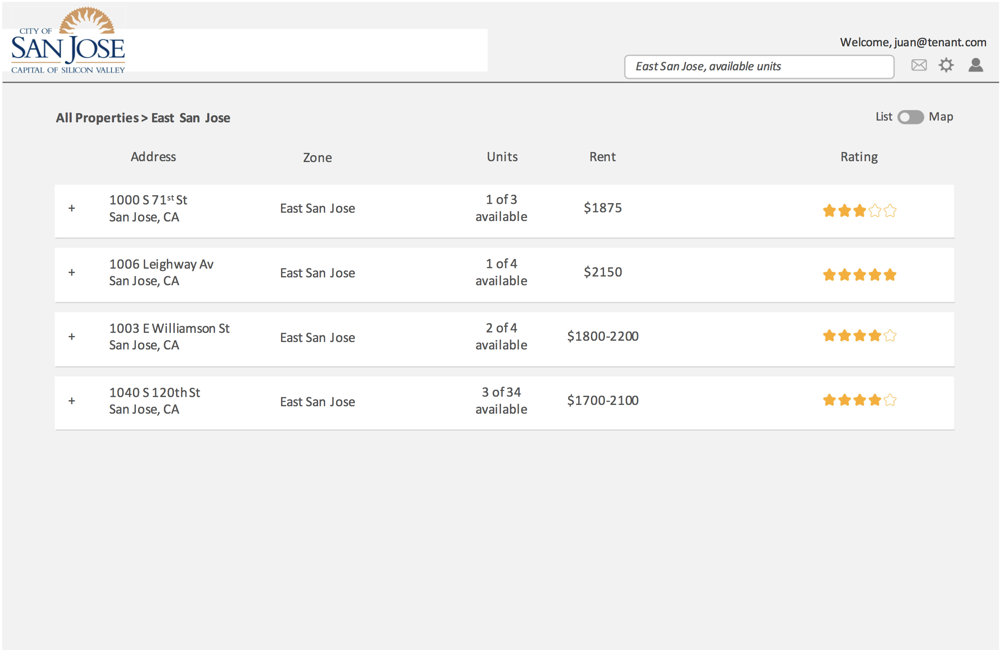

What is the problem we are solving?
Recently, San José City Council passed an ordinance to develop a rent registry so that we could track whether rental prices are compliant with city rent control policies.
What did we do?
The Housing Department first developed an alpha version of the registry that meets the functional requirements of the rent registry, but we knew that building a good product is more than meeting basic specifications. It’s about being intuitive to use, easy to understand, and secure. To work towards these goals, we enlisted the help of some of IBM’s top talent to help provide guidance and advice through their Smarter Cities Challenge.
IBM sent a team of six top employees to come to San José for 3 weeks to work closely with the Housing team. The IBMers conducted interviews and led workshops with affordable housing developers, landlords, tenant advocacy groups, foundations, city staff members, and more stakeholders.
After the 3 weeks, IBM presented their findings so the Housing Department could take over the process and take the project to the finish line. The work ensured that the city didn’t rush to a solution, but instead took the time to understand the needs of different user populations. Here are some outcomes that the team created:
1. Personas. The IBM team produced some clear user personas to guide the design of the rent registry: landlords with more than 15 units, landlords with fewer units, tenant who works in the service industry, tenant who works in business and high tech, tenant who’s disabled or senior, and City Housing Department program manager. Here’s an example of one of these profiles.

2. Stakeholder map. The IBMers led a workshop of a group of cross-departmental city staff to understand the relationship between the variety of stakeholders that care about rent control issues.
3. Mockups. The IBM team created mockups of what a rent registry could look like. The mockup focused on the different user personas and how each of them could easily accomplish the task that they’d come to the registry for. It clearly shows what information is private, and what information is public (e.g., people wouldn’t be able to what others are paying for rent).
Read IBM's report here.Today, the Housing Department has taken the baton to continue developing a rent registry that works for everyone. Look out for it soon.
Thanks to the IBM team and the San José Housing Department for championing this project.